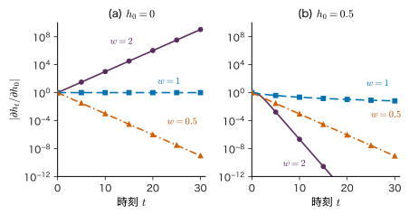
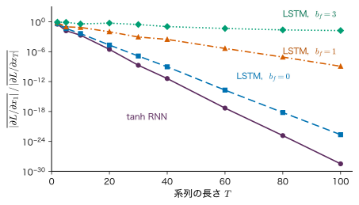
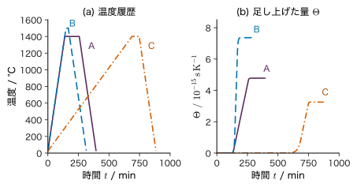

第23章RNN・LSTM と系列表現 — 記憶を持つネットワーク
- 直前の数個のトークンではなく，ずっと前に現れた情報まで使って次を予測するには，ネットワークをどう組めばよいか．
- 焼成炉の温度記録のように長さの違う時系列から，最終的な密度のような 1 つの量を予測するとき，途中の情報をどう「覚えて」おけばよいか．
- RNN（再帰型ニューラルネットワーク）は原理的には全履歴を使えるのに，なぜ長い依存関係を学びにくいのか．その弱点の何が，次章の Attention を必要としたのか．
「昇温，保持，降温」のような工程の記録や，文章，分子を表す文字列は，順序に意味のあるデータ（系列）である．第22章では，系列の確率を自己回帰分解 $p(x_{1:T})=\prod_t p(x_t\mid x_{\lt t})$ で書き，条件 $x_{\lt t}$ を「直前の $n-1$ 個」（n-gram）や「直前の隠れ状態」（隠れ Markov モデル）に縮めた．どちらも，覚えておけるものが小さな離散の表に限られる．たとえば 3-gram は 2 つ前より昔を一切見ない．
本章では，連続値のベクトル $\bm{h}_t$ に過去を要約して持ち運ぶネットワーク，RNN（recurrent neural network）を組み立てる．同じ重みを全時刻で使い回すので，系列の長さが変わってもパラメーターの数は変わらない．第14・15章のニューラルネットワークと誤差逆伝播を時間方向に展開するだけで，学習の式も得られる．ところが展開した鎖は系列の長さだけ深くなり，勾配が時刻をさかのぼるたびに同じ行列を掛けられて，消えるか爆発する．これを和の形の記憶（セル状態）で和らげたのが LSTM である．最後に，系列を別の系列へ写す encoder–decoder が「入力全体を 1 本の固定長ベクトルに押し込む」ことの限界を見て，次章の Attention へ進む理由をまとめる．
- トークンを one-hot ベクトルと埋め込みベクトルで表し，埋め込みが「行列の行の取り出し」であることを説明できる．
- RNN の式 $\bm{h}_t=\tanh(\bm{W}_{hh}\bm{h}_{t-1}+\bm{W}_{xh}\bm{x}_t+\bm{b}_h)$ の各量の形を言え，小さな数値例で 2〜3 ステップを手で計算できる．
- RNN を言語モデルとして学習させる損失（次のトークンの交差エントロピー）と teacher forcing，生成の手順を説明できる．
- 時間方向の誤差逆伝播（BPTT）を導き，$\partial\bm{h}_t/\partial\bm{h}_k$ が行列の積になることから勾配消失・爆発を説明できる．
- LSTM のゲートとセル状態の式を書き，セル状態の更新が足し算であることが勾配を保つ理由を説明できる．
- encoder–decoder の固定長ベクトルの限界，逐次計算，長い経路という RNN の三つの弱点を挙げ，Attention がそれぞれにどう答えるかを述べられる．
入門ルートで読む節：23.1，23.2，23.3，23.5，23.8，23.11．「詳しいルート」の印が付いた節は，初めて読むときは飛ばしてよい．
23.1 系列をニューラルネットワークに入れる — one-hot と埋め込み
23.1.1 何が問題か — 記号と長さ
第14章のニューラルネットワークは，決まった次元 $D$ の実数ベクトル $\bm{x}\in\R^{D}$ を入力にとった．系列データをそのまま入れようとすると，二つの問題に出会う．
- 記号は数ではない：工程の記録「昇温，保持，降温」や文章の単語，分子を表す文字列の文字は，番号を振っても大小に意味がない．「降温＝3」は「保持＝2」より 1 だけ大きいわけではない．
- 長さがそろわない：工程の段数や文の長さは試料ごと・文ごとに違う．固定次元の入力層は，最長の系列に合わせて 0 を詰める（パディング）か，切り捨てるしかない．どちらも不自然で，しかも「3 段目の昇温」と「5 段目の昇温」は別の入力ユニットに入るので，同じ操作だと学ぶのに別々のデータが要る．
前者には one-hot ベクトルと埋め込み（本節），後者には同じ重みを時刻ごとに使い回す再帰（23.2 節）で答える．
23.1.2 語彙・トークン ID・one-hot ベクトル
系列の 1 つ 1 つの記号をトークン（token），とりうるトークン全体の集合を語彙（vocabulary）といい，語彙の大きさを $V_{\mathrm{voc}}$ と書く（Value 行列 $\bm{V}$ と区別するため添字を付ける．第24章）．語彙の各トークンに $1,\dots,V_{\mathrm{voc}}$ の整数の番号（トークン ID）を振る．本章では，位置 $t$ のトークン ID を細字の $x_t\in\{1,\dots,V_{\mathrm{voc}}\}$，それをネットワークに入れるためのベクトルを太字の $\bm{x}_t$ と書き分ける．系列の長さは $T$，位置は $t=1,\dots,T$ である．
定義23.1 one-hot ベクトル
トークン ID $v\in\{1,\dots,V_{\mathrm{voc}}\}$ の one-hot ベクトル（1 つだけが 1 のベクトル）を，第 $v$ 成分だけが 1 で残りが 0 の列ベクトル $\bm{e}_v\in\{0,1\}^{V_{\mathrm{voc}}}$ と定める．$\bm{e}_1,\dots,\bm{e}_{V_{\mathrm{voc}}}$ は $\R^{V_{\mathrm{voc}}}$ の標準基底である．
one-hot ベクトルはどの 2 つも直交し，距離はすべて $\sqrt2$ で等しい．したがって「保持」と「昇温」が「保持」と「降温」より似ている，といった関係を一切含まない．番号の大小に意味がない記号を表すには，この「何も仮定しない」性質が出発点として都合がよい．一方で，次元が語彙の大きさ $V_{\mathrm{voc}}$ になる（英語の単語なら数万）ので，そのまま第 1 層に入れると重みの数が大きくなる．
23.1.3 埋め込みは行列の行の取り出し
定義23.2 埋め込み行列と埋め込みベクトル
学習するパラメーターの行列 $\bm{W}_E\in\R^{V_{\mathrm{voc}}\times D}$ を埋め込み行列（embedding matrix）といい，その第 $v$ 行をトークン $v$ の埋め込みベクトルとする．位置 $t$ のトークン $x_t$ の入力ベクトルを
\begin{equation} \bm{x}_t=\bm{W}_E^{\tp}\bm{e}_{x_t}\in\R^{D} \label{eq:23-embed} \end{equation}と定める．$D$ を埋め込みの次元という．
式 \eqref{eq:23-embed} の行列とベクトルの積を成分で書くと，$(\bm{W}_E^{\tp}\bm{e}_{v})_d=\sum_{u=1}^{V_{\mathrm{voc}}}(W_E)_{ud}\,(\bm{e}_v)_u$ であり，和の中で 0 でないのは $u=v$ の項だけなので
$$ (\bm{W}_E^{\tp}\bm{e}_{v})_d=(W_E)_{vd},\qquad d=1,\dots,D $$となる．つまり one-hot ベクトルを掛けることは，$\bm{W}_E$ の第 $v$ 行を取り出して列ベクトルに立てることと同じである（図23.1）．実際の計算では掛け算をせず，ID を添字にして行を読むだけで済む．
見方を変えると，埋め込みは「one-hot ベクトルを入力とする，バイアスなし・活性化なしの全結合層」である．第14章の記法で書けば重み行列が $\bm{W}_E^{\tp}\in\R^{D\times V_{\mathrm{voc}}}$ の層であり，その勾配も第15章の逆伝播でそのまま求まる．ただし勾配 $\partial L/\partial\bm{W}_E$ のうち 0 でないのは，そのミニバッチに現れたトークンの行だけである．学習が進むと，同じような文脈に現れるトークンの埋め込みが近づく傾向がある（Bengio et al. 2003 のニューラル言語モデルはこの性質を n-gram の弱点への答えとして示した）．
例題23.1 埋め込みを手で引く
焼成工程の記録を，語彙 {1 昇温，2 保持，3 降温，4 〈終〉} のトークン列で表す（〈終〉は記録の終わりを表す特別なトークン）．埋め込みの次元を $D=2$ とし，埋め込み行列を
$$ \bm{W}_E=\begin{pmatrix}0.2&1.0\\-0.5&0.3\\0.8&-0.4\\0.1&-0.9\end{pmatrix}\in\R^{4\times2} $$とする（説明のための値）．(1) 「保持」の one-hot ベクトル $\bm{e}_2$ を書き，$\bm{W}_E^{\tp}\bm{e}_2$ を行列の積として計算せよ．(2) 語彙 50000，埋め込みの次元 256 のとき，埋め込み行列のパラメーターはいくつか．one-hot ベクトルをそのまま入力すると，入力の次元はいくつになるか．
解答 (1) $\bm{e}_2=(0,1,0,0)^{\tp}$．$\bm{W}_E^{\tp}=\begin{pmatrix}0.2&-0.5&0.8&0.1\\1.0&0.3&-0.4&-0.9\end{pmatrix}$ なので，
$$ \begin{aligned} (\bm{W}_E^{\tp}\bm{e}_2)_1&=0.2\cdot0+(-0.5)\cdot1\\ &\quad+0.8\cdot0+0.1\cdot0=-0.5,\\ (\bm{W}_E^{\tp}\bm{e}_2)_2&=1.0\cdot0+0.3\cdot1\\ &\quad+(-0.4)\cdot0+(-0.9)\cdot0=0.3 . \end{aligned} $$これは $\bm{W}_E$ の第 2 行 $(-0.5,\ 0.3)$ を縦に立てたものである．(2) $50000\times256=12{,}800{,}000$ 個．one-hot ベクトルの次元は 50000 であり，埋め込みはこれを 256 次元に縮めて次の層へ渡す．
23.2 RNN — 同じ重みで過去を要約し続ける
23.2.1 考え方 — 状態を更新し続ける
温度計の記録を 1 分ごとに読みながら，「ここまでの熱処理の効き具合」を頭の中で更新していく作業を考える．新しい読みが来るたびに，覚えている要約と新しい読みを組み合わせて要約を書き換え，古い読みそのものは捨てる．覚えておく量は記録の長さによらず一定である．RNN はこの作業をそのまま式にしたものである．要約を隠れ状態 $\bm{h}_t$ と呼び，前の要約 $\bm{h}_{t-1}$ と今の入力 $\bm{x}_t$ から新しい要約 $\bm{h}_t$ を作る．
定義23.3 RNN（Elman 型の再帰型ニューラルネットワーク）
入力の系列 $\bm{x}_1,\dots,\bm{x}_T\in\R^{D}$ と初期状態 $\bm{h}_0\in\R^{D_h}$（ふつうは $\bm{0}$）から，$t=1,2,\dots,T$ の順に
\begin{equation} \begin{aligned} &\bm{h}_t=\tanh\bigl(\bm{W}_{hh}\bm{h}_{t-1}\\ &\qquad+\bm{W}_{xh}\bm{x}_t+\bm{b}_h\bigr) \end{aligned} \label{eq:23-rnn} \end{equation} \begin{equation} \bm{o}_t=\bm{W}_{hy}\bm{h}_t+\bm{b}_y \label{eq:23-out} \end{equation}を計算する．$\tanh$ は成分ごとに作用する．$\bm{h}_t\in\R^{D_h}$ を隠れ状態，$D_h$ をその次元，$\bm{o}_t\in\R^{K}$ を出力（分類なら softmax に入れる前のロジット（logit））という．パラメーターは $\bm{W}_{xh}\in\R^{D_h\times D}$，$\bm{W}_{hh}\in\R^{D_h\times D_h}$，$\bm{b}_h\in\R^{D_h}$，$\bm{W}_{hy}\in\R^{K\times D_h}$，$\bm{b}_y\in\R^{K}$ で，すべての時刻で同じものを使う．
式 \eqref{eq:23-rnn} の括弧の中は，第14章の 1 層の前活性 $\bm{W}\bm{z}+\bm{b}$ に「1 時刻前の自分の出力 $\bm{h}_{t-1}$」を入力として足したものである．そこで
\begin{equation} \begin{aligned} \bm{a}_t&\equiv\bm{W}_{hh}\bm{h}_{t-1}+\bm{W}_{xh}\bm{x}_t+\bm{b}_h,\\ \bm{h}_t&=\tanh(\bm{a}_t) \end{aligned} \label{eq:23-pre} \end{equation}と前活性 $\bm{a}_t\in\R^{D_h}$ に名前を付けておく（23.4 節の逆伝播で使う）．本章の $\bm{h}_t$ は第14章の隠れ層の出力 $\bm{z}^{(l)}$ に当たる量で，系列の文献の慣例に従って $\bm{h}$ と書く（第16章のグラフの頂点の特徴 $\bm{h}_i$ とは別の量）．添字の $t$ は層ではなく時刻である．
23.2.2 時間方向に展開する
式 \eqref{eq:23-rnn} は自分の出力を自分に戻すループを含むので，一見すると第14章の「入力から出力へ一方向に流れるネットワーク」とは違う．しかし系列の長さ $T$ が決まれば，ループを時刻の数だけ書き並べて，$T$ 段の層を持つふつうのネットワークに直せる（図23.2）．これを時間方向の展開（unrolling）という．展開したネットワークの特徴は，どの段も同じ重み $\bm{W}_{hh},\bm{W}_{xh},\bm{b}_h$ を共有することである．第16章の畳み込みが「同じフィルターを位置ごとに使い回す」ことで空間方向の重み共有をしたのと同じく，RNN は時間方向に重みを共有する．
展開した図で各量の形を確かめておく（表23.1）．入力の次元 $D$，隠れ状態の次元 $D_h$，出力の次元 $K$ は時刻によらない．時刻によって変わるのはベクトルの値だけで，行列の形も値も変わらない．したがってパラメーターの数は系列の長さ $T$ によらない．
| 量 | 形 | 時刻ごとに変わるか | パラメーター数 |
|---|---|---|---|
| 入力 $\bm{x}_t$ | $D$ | 変わる | — |
| 隠れ状態 $\bm{h}_t$，前活性 $\bm{a}_t$ | $D_h$ | 変わる | — |
| $\bm{W}_{xh}$ | $D_h\times D$ | 共有 | $D_hD$ |
| $\bm{W}_{hh}$ | $D_h\times D_h$ | 共有 | $D_h^{2}$ |
| $\bm{b}_h$ | $D_h$ | 共有 | $D_h$ |
| $\bm{W}_{hy}$，$\bm{b}_y$ | $K\times D_h$，$K$ | 共有 | $K(D_h+1)$ |
| 出力 $\bm{o}_t$ | $K$ | 変わる | — |
ミニバッチで $B$ 本の系列を同時に処理するときは，第14章 14.3 節と同じく，時刻 $t$ の入力を列に並べた $D\times B$ の行列にして，式 \eqref{eq:23-rnn} をまとめて計算する．長さの違う系列は，短いものの後ろを詰め物のトークンで埋めて長さをそろえ，詰め物の位置の損失を数えない（マスクする）のがふつうである．ただし，ある時刻 $t$ の計算は $\bm{h}_{t-1}$ が出るまで始められないので，時刻の方向には並列化できない．この点は 23.8 節で RNN の弱点として戻ってくる．
なぜ tanh を使うのか
式 \eqref{eq:23-rnn} では同じ変換を何度も繰り返す．活性化が恒等写像だと $\bm{h}_t$ は $\bm{W}_{hh}$ の $t$ 乗で増減し，固有値の絶対値が 1 を少しでも超えると値が際限なく大きくなる．$\tanh$ は値を $(-1,1)$ に閉じ込めるので，何度繰り返しても状態は有界に保たれる．0 の近くでは $\tanh a\approx a$（傾き 1）で，正負の両方の値をとれることも使いやすい．ただし，この「閉じ込め」が飽和を生み，23.5 節で見るように勾配を消す原因の一つにもなる．
例題23.2 RNN を 2 ステップ手で回す
例題23.1 の埋め込み（$D=2$）を入力とし，隠れ状態の次元を $D_h=2$，$\bm{h}_0=\bm{0}$ とする．重みを
$$ \begin{aligned} \bm{W}_{xh}&=\bm{I}=\begin{pmatrix}1&0\\0&1\end{pmatrix},\\ \bm{W}_{hh}&=\begin{pmatrix}0.5&-0.5\\0.5&0.5\end{pmatrix},\qquad \bm{b}_h=\bm{0} \end{aligned} $$とする（説明のための値）．入力のトークン列「昇温，保持」，すなわち $\bm{x}_1=(0.2,\ 1.0)^{\tp}$，$\bm{x}_2=(-0.5,\ 0.3)^{\tp}$ について $\bm{h}_1,\bm{h}_2$ を求めよ．数値は小数第 4 位まで書け．
解答 時刻 1：$\bm{h}_0=\bm{0}$ なので $\bm{W}_{hh}\bm{h}_0=\bm{0}$，前活性は $\bm{a}_1=\bm{x}_1=(0.2,\ 1.0)^{\tp}$．成分ごとに tanh をとって
$$ \begin{aligned} \bm{h}_1&=\bigl(\tanh 0.2,\ \tanh 1.0\bigr)^{\tp}\\ &=(0.1974,\ 0.7616)^{\tp}. \end{aligned} $$時刻 2：まず過去の要約からの寄与を計算する．
$$ \begin{aligned} (\bm{W}_{hh}\bm{h}_1)_1&=0.5\times0.1974-0.5\times0.7616\\ &=-0.2821,\\ (\bm{W}_{hh}\bm{h}_1)_2&=0.5\times0.1974+0.5\times0.7616\\ &=0.4795. \end{aligned} $$これに今の入力 $\bm{x}_2$ を足して，$\bm{a}_2$ の第 1 成分は $-0.2821-0.5=-0.7821$，第 2 成分は $0.4795+0.3=0.7795$．tanh をとって
$$ \begin{aligned} \bm{h}_2&=\bigl(\tanh(-0.7821),\ \tanh 0.7795\bigr)^{\tp}\\ &=(-0.6539,\ 0.6524)^{\tp}. \end{aligned} $$$\bm{h}_2$ には「保持」の情報 $\bm{x}_2$ だけでなく，$\bm{W}_{hh}\bm{h}_1$ を通じて 1 つ前の「昇温」の情報も混ざっている．たとえば第 2 成分 $0.6524$ は，$\bm{x}_2$ だけなら $\tanh 0.3=0.2913$ だったところを，$\bm{h}_1$ からの寄与 $0.4795$ が押し上げた値である．
23.3 言語モデルとしての RNN — 次のトークンを予測する
23.3.1 自己回帰分解の各因子を RNN で与える
第2章 2.2 節の乗法定理を繰り返すと，長さ $T+1$ のどんな系列の確率も
\begin{equation} \begin{aligned} &p(x_{1:T+1})\\ &\quad=p(x_1)\prod_{t=1}^{T}p(x_{t+1}\mid x_{\le t}) \end{aligned} \label{eq:23-ar} \end{equation}と書ける（長さを $T+1$ としたのは，次のトークンの予測がちょうど $T$ 回になるようにするためで，第26章の書き方と同じである）．ここで $x_{\le t}\equiv(x_1,\dots,x_t)$ である（近似ではない恒等式である．第22章の $\prod_{t}p(x_t\mid x_{\lt t})$ と添字を 1 つずらしただけ）．系列の確率モデル（文章なら言語モデル）を作るとは，右辺の条件付き分布 $p(x_{t+1}\mid x_{\le t})$ を，長さの違う条件 $x_{\le t}$ について与えることである．n-gram は条件を直前の $n-1$ 個に切り詰め，隠れ Markov モデルは離散の隠れ状態 1 つに要約した．RNN は，条件 $x_{\le t}$ 全体を連続値のベクトル $\bm{h}_t$ に要約し，そこから次のトークンの分布を出す．
定義23.4 RNN 言語モデル
トークン列 $x_1,\dots,x_t$ を式 \eqref{eq:23-embed} で埋め込み，式 \eqref{eq:23-rnn} で $\bm{h}_t$ まで計算する．出力の次元を語彙の大きさ $K=V_{\mathrm{voc}}$ にとり，ロジット $\bm{o}_t=\bm{W}_{hy}\bm{h}_t+\bm{b}_y\in\R^{V_{\mathrm{voc}}}$ を softmax に通したものを次のトークンの分布とする．
\begin{equation} \begin{aligned} &p(x_{t+1}=v\mid x_{\le t})\\ &\quad=\softmax(\bm{o}_t)_v\\ &\quad=\frac{\exp(o_{t,v})}{\sum_{u}\exp(o_{t,u})} \end{aligned} \label{eq:23-lm} \end{equation}ここで $v=1,\dots,V_{\mathrm{voc}}$，分母の和は $u=1,\dots,V_{\mathrm{voc}}$ についてとる．$o_{t,v}$ は $\bm{o}_t$ の第 $v$ 成分である．
$\bm{h}_t$ は $x_1,\dots,x_t$ のすべてに依存する（$\bm{h}_t$ は $\bm{h}_{t-1}$ を通じて $\bm{x}_{t-1}$ に，$\bm{h}_{t-2}$ を通じて $\bm{x}_{t-2}$ に，… と依存する）ので，式 \eqref{eq:23-lm} の条件は原理的には全履歴である．これが n-gram との本質的な違いである．ただし，全履歴をどれだけ正確に覚えていられるかは別の問題で，23.5 節の主題になる．
| モデル | 過去の要約 | 覚えられる範囲 | パラメーター |
|---|---|---|---|
| n-gram（第22章） | 直前の $n-1$ 個のトークンそのもの | $n-1$ 個まで．それより前は見ない | 確率の表．大きさは $V_{\mathrm{voc}}^{\,n}$ に比例して増える |
| 隠れ Markov モデル（第22章） | 離散の隠れ状態 $z_t\in\{1,\dots,K\}$ | 原理的には全履歴（ただし $K$ 通りの要約） | 遷移行列と出力確率の表 |
| RNN 言語モデル（本節） | 連続値のベクトル $\bm{h}_t\in\R^{D_h}$ | 原理的には全履歴（実際の学習では長い依存関係が難しい．23.5 節） | 行列（系列長によらない） |
隠れ Markov モデル（第22章 22.3 節．詳しいルート）は，観測の背後に $K$ 通りの値をとる見えない状態 $z_t$ を置き，$z_t$ は直前の状態だけに依存して移り変わり，各時刻の観測は $z_t$ だけから出るとするモデルである（図22.1(c)）．表の中ほどの行は，過去を $K$ 通りの離散の要約に縮める方法と読めばよい．
23.3.2 学習 — 次のトークンの交差エントロピーと teacher forcing
学習データの 1 本の系列を $x_1,\dots,x_{T+1}$ とする（$x_1$ は最初のトークン．文頭を表す特別なトークンを置くこともある）．位置 $t=1,\dots,T$ の正解は「実際に次に来たトークン」$x_{t+1}$ である．その one-hot ベクトルを目標 $\bm{y}_t=\bm{e}_{x_{t+1}}$ とすると，第14章 14.6 節の多クラス分類と同じく，損失は交差エントロピー（負の対数尤度）になる．本書のニューラルネットワークの規約（第14・15章）に合わせて，予測の回数 $T$ で平均する（第26章の式と同じ形）．
\begin{equation} \begin{aligned} L&=-\frac{1}{T}\sum_{t=1}^{T}\ln p(x_{t+1}\mid x_{\le t})\\ &=\frac{1}{T}\sum_{t=1}^{T}\ell_t,\\ \ell_t&\equiv-\ln\softmax(\bm{o}_t)_{x_{t+1}} \end{aligned} \label{eq:23-loss} \end{equation}これは式 \eqref{eq:23-ar} の対数尤度 $\ln p(x_{2:T+1}\mid x_1)$ の $-1/T$ 倍であり，$L$ を最小にすることは最尤推定と同じである（第5章 5.5 節：交差エントロピーの最小化はデータの分布との KL ダイバージェンスの最小化）．$\ell_t$ を $\bm{o}_t$ で微分すると，第14章 14.6 節の結果がそのまま使えて
\begin{equation} \pdiff{\ell_t}{\bm{o}_t}=\bm{p}_t-\bm{y}_t \label{eq:23-outgrad} \end{equation}となる．$\bm{p}_t\equiv\softmax(\bm{o}_t)\in\R^{V_{\mathrm{voc}}}$ は予測の確率ベクトルで，右辺はそこから正解の one-hot ベクトルを引いたものである．
学習のときの入力には，モデルが自分で予測したトークンではなく，学習データの正解のトークン $x_1,\dots,x_{T}$ をそのまま入れる（図23.3(a)）．これを teacher forcing という（Williams & Zipser 1989 がこの名で呼んだ）．正解を入れるので，1 本の系列から $T$ 個の「次のトークンの予測問題」が同時に得られ，途中で予測を誤っても後の時刻の学習が乱されない．
生成のときは正解がないので，最初のトークン（または開始の特別なトークン）から始めて，(i) 式 \eqref{eq:23-lm} で次のトークンの分布を計算し，(ii) そこから 1 つ選び（最大の確率のものを選ぶ greedy か，確率に従ってサンプリングする），(iii) 選んだトークンを次の時刻の入力にする，を〈終〉が出るまで繰り返す（図23.3(b)）．学習時は正解を入れ，生成時は自分の出力を入れるというこの違いは，GPT でもそのまま残る（第26章）．
例題23.3 次のトークンの確率と損失
例題23.2 の RNN に，出力の重み $\bm{W}_{hy}=2\begin{pmatrix}1&1\\-1&1\\1&-1\\-1&-1\end{pmatrix}\in\R^{4\times2}$，$\bm{b}_y=\bm{0}$ を加えて言語モデルとする（行の順は語彙の ID 順．説明のための値で，学習していない）．系列「昇温，保持，降温，〈終〉」（トークンは $T+1=4$ 個で，予測は $T=3$ 回）を teacher forcing で入力する．3 つ目の入力「降温」での隠れ状態は $\bm{h}_3=(0.1458,\ -0.3806)^{\tp}$ である．(1) $t=1$ のロジット $\bm{o}_1$ と確率 $\bm{p}_1$ を求め，正解「保持」の確率を答えよ．(2) $t=2,3$ の正解の確率がそれぞれ $0.0047$，$0.2940$ であることを使い，式 \eqref{eq:23-loss} の $L$ と perplexity $\exp(L)$ を求めよ．(3) 何も学習していない「一様に当てずっぽう」のモデルの $L$ と比べよ．
解答 (1) 例題23.2 の $\bm{h}_1=(0.1974,\ 0.7616)^{\tp}$ を使う．$\bm{W}_{hy}$ の各行と $\bm{h}_1$ の内積を 2 倍して
$$ \bm{o}_1=2\begin{pmatrix}0.1974+0.7616\\-0.1974+0.7616\\0.1974-0.7616\\-0.1974-0.7616\end{pmatrix}=\begin{pmatrix}1.9179\\1.1284\\-1.1284\\-1.9179\end{pmatrix}. $$$\exp$ をとると $(6.807,\ 3.091,\ 0.324,\ 0.147)$，和は $10.368$ なので，$\bm{p}_1=(0.6565,\ 0.2981,\ 0.0312,\ 0.0142)$．正解「保持」（ID 2）の確率は $0.2981$ で，$\ell_1=-\ln0.2981=1.2103$．
(2) $\ell_2=-\ln0.0047=5.3669$，$\ell_3=-\ln0.2940=1.2240$（ここでは丸める前の確率で対数をとった値を書く）．
$$ \begin{aligned} L&=\frac{1.2103+5.3669+1.2240}{3}=\frac{7.8012}{3}\\ &=2.6004,\qquad \exp(L)=13.47. \end{aligned} $$(3) 4 つのトークンに等しく $1/4$ を配るモデルでは，どの時刻も $\ell_t=\ln4=1.3863$ なので $L=1.3863$，perplexity は 4 である．学習前の勝手な重みのモデルは一様な予測より悪い（$t=2$ で正解「降温」に $0.0047$ しか与えていない）．perplexity は「平均して何択で迷っているのに相当するか」を表し（第26章で詳しく扱う），学習はこれを小さくする．
例題23.3 の RNN 言語モデルのパラメーターを数えると，$\bm{W}_E$ が $4\times2=8$，$\bm{W}_{xh}$ が 4，$\bm{W}_{hh}$ が 4，$\bm{b}_h$ が 2，$\bm{W}_{hy}$ が 8，$\bm{b}_y$ が 4 で，合わせて 30 個である．この数は系列の長さによらない．
発展：連続値の要約が持つ利点
3-gram は「保持，降温」の次の分布と「保持，冷却」の次の分布を別々の表の行として数えるので，「降温」と「冷却」が似た語でも，片方の統計はもう片方に役立たない．埋め込みと RNN を使うと，似た文脈に現れる語の埋め込みが近づき，$\bm{h}_t$ も近い値になるので，片方で学んだことがもう片方に自然に広がる（汎化する）．Bengio et al. (2003) は，固定長の文脈を入力とするニューラルネットワークでこの効果を示した．RNN はさらに文脈の長さの制限を取り払った．
23.4 時間方向の誤差逆伝播（BPTT）詳しいルート
23.4.1 展開したネットワークに逆伝播を使う
RNN を時間方向に展開すると（図23.2），$T$ 段の層を持つふつうのネットワークになる．したがって勾配は第15章の誤差逆伝播で計算できる．ただし二つの点が第15章と違う．(i) 損失が最後の段だけでなく各時刻の出力から入る（式 \eqref{eq:23-loss} の $\ell_t$）．(ii) 同じ重みが全段に現れるので，重みの勾配は各時刻の寄与の和になる．この計算を時間方向の誤差逆伝播（backpropagation through time，BPTT．Werbos 1990）という．
導出では，平均の係数 $1/T$ を省き，各時刻の損失の和 $L=\sum_{t=1}^{T}\ell_t$ の勾配を求める（平均の勾配はこれを $T$ で割るだけである）．言語モデルではすべての時刻に損失があるが，例題23.4 のように最後の時刻だけに損失がある場合も同じ式で扱えるよう，損失のない時刻は $\ell_t=0$ とする．記号を次のように決める．
- $\bm{g}_t\equiv\pdiff{L}{\bm{h}_t}\in\R^{D_h}$：$\bm{h}_t$ を動かしたときの損失全体の変化．$\bm{h}_t$ は $\bm{o}_t$ を通じて $\ell_t$ に，$\bm{a}_{t+1}$ を通じて後の全時刻の損失に効く．
- $\bm{\delta}_t\equiv\pdiff{L}{\bm{a}_t}\in\R^{D_h}$：前活性（式 \eqref{eq:23-pre}）についての誤差．第15章の $\bm{\delta}^{(l)}$ の層の番号 $l$ を時刻 $t$ に置き換えたもの．
導出：BPTT の式
(1) $\bm{h}_t$ の行き先を数える．$\bm{h}_t$ が現れる式は，出力 $\bm{o}_t=\bm{W}_{hy}\bm{h}_t+\bm{b}_y$（式 \eqref{eq:23-out}）と，次の時刻の前活性 $\bm{a}_{t+1}=\bm{W}_{hh}\bm{h}_t+\bm{W}_{xh}\bm{x}_{t+1}+\bm{b}_h$ の 2 つだけである．連鎖律（大学数学 第6章 6.4）で二つの経路の寄与を足すと，成分 $j$ について
$$ g_{t,j}=\sum_{k}\pdiff{\ell_t}{o_{t,k}}\pdiff{o_{t,k}}{h_{t,j}}+\sum_{m}\pdiff{L}{a_{t+1,m}}\pdiff{a_{t+1,m}}{h_{t,j}} . $$$\partial o_{t,k}/\partial h_{t,j}=(W_{hy})_{kj}$，$\partial a_{t+1,m}/\partial h_{t,j}=(W_{hh})_{mj}$ なので，ベクトルで書くと
\begin{equation} \begin{aligned} \bm{g}_t&=\bm{W}_{hy}^{\tp}(\bm{p}_t-\bm{y}_t)\\ &\quad+\bm{W}_{hh}^{\tp}\bm{\delta}_{t+1} \end{aligned} \label{eq:23-bptt-g} \end{equation}である．ただし $\bm{\delta}_{T+1}\equiv\bm{0}$ とする．第 1 項には式 \eqref{eq:23-outgrad} を使った（損失のない時刻では 0）．$\bm{\delta}_{T+1}=\bm{0}$ は「最後の時刻の後には何もない」ことを表す．
(2) tanh を通す．$h_{t,j}=\tanh a_{t,j}$ は成分ごとの関数で，$\tanh'a=1-\tanh^{2}a$（第14章 14.2 節）なので $\partial h_{t,j}/\partial a_{t,j}=1-h_{t,j}^{2}$．$a_{t,j}$ は $h_{t,j}$ を通してだけ $L$ に効くから
\begin{equation} \bm{\delta}_t=(\bm{1}-\bm{h}_t\odot\bm{h}_t)\odot\bm{g}_t \label{eq:23-bptt-d} \end{equation}である（$\odot$ は成分ごとの積，$\bm{1}$ はすべての成分が 1 のベクトル）．
(3) 共有された重みの勾配は和になる．$\bm{W}_{hh}$ の成分 $(W_{hh})_{jm}$ は，すべての時刻の前活性 $a_{t,j}=\sum_m(W_{hh})_{jm}h_{t-1,m}+\cdots$ に現れる．各時刻の寄与 $\partial L/\partial a_{t,j}\cdot\partial a_{t,j}/\partial(W_{hh})_{jm}=\delta_{t,j}h_{t-1,m}$ を全時刻で足して
\begin{equation} \begin{aligned} \pdiff{L}{\bm{W}_{hh}}&=\sum_{t=1}^{T}\bm{\delta}_t\bm{h}_{t-1}^{\tp},\\ \pdiff{L}{\bm{W}_{xh}}&=\sum_{t=1}^{T}\bm{\delta}_t\bm{x}_t^{\tp},\\ \pdiff{L}{\bm{b}_h}&=\sum_{t=1}^{T}\bm{\delta}_t \end{aligned} \label{eq:23-bptt-w} \end{equation}を得る．出力層の重みは各時刻の $\bm{o}_t$ にだけ現れるので，同じく
$$ \pdiff{L}{\bm{W}_{hy}}=\sum_{t=1}^{T}(\bm{p}_t-\bm{y}_t)\bm{h}_t^{\tp} $$である．1 つの時刻の項は第15章の $\partial L/\partial\bm{W}^{(l)}=\bm{\delta}^{(l)}\bm{z}^{(l-1)\tp}$ と同じ形で，違いは時刻についての和だけである．
（導出終わり）
計算の手順は，(i) $t=1,\dots,T$ の順に式 \eqref{eq:23-rnn}，\eqref{eq:23-out} で順伝播し，$\bm{h}_t$ と $\bm{p}_t$ をすべて保存する，(ii) $t=T,T-1,\dots,1$ の逆順に式 \eqref{eq:23-bptt-g}，\eqref{eq:23-bptt-d} で $\bm{\delta}_t$ を計算し，式 \eqref{eq:23-bptt-w} の和に足し込む，である．計算量は順伝播と同じく $T$ に比例するが，保存する量も $T$ に比例して増える．
23.4.2 Jacobi 行列の積
式 \eqref{eq:23-bptt-g}，\eqref{eq:23-bptt-d} を組み合わせると，誤差が時刻を 1 つさかのぼるごとに何が掛かるかが見える．$\bm{h}_t$ を $\bm{h}_{t-1}$ で微分した行列（Jacobi（ヤコビ）行列．$(j,m)$ 成分が $\partial h_{t,j}/\partial h_{t-1,m}$）は，式 \eqref{eq:23-rnn} から
$$ \pdiff{h_{t,j}}{h_{t-1,m}}=(1-h_{t,j}^{2})\,(W_{hh})_{jm}, $$行列で書けば
$$ \pdiff{\bm{h}_t}{\bm{h}_{t-1}}=\diag\bigl(\bm{1}-\bm{h}_t\odot\bm{h}_t\bigr)\,\bm{W}_{hh}\in\R^{D_h\times D_h} $$である（$\diag(\bm{v})$ はベクトル $\bm{v}$ を対角に並べた行列）．時刻 $k$ から $t$（$k\lt t$）まで連鎖律でつなぐと
\begin{equation} \begin{aligned} \pdiff{\bm{h}_t}{\bm{h}_k}&=\pdiff{\bm{h}_t}{\bm{h}_{t-1}}\cdots\pdiff{\bm{h}_{k+1}}{\bm{h}_k}\\ &=\prod_{i=k+1}^{t}\bigl[\diag\bigl(\bm{1}-\bm{h}_i\odot\bm{h}_i\bigr)\\ &\qquad\quad\times\bm{W}_{hh}\bigr] \end{aligned} \label{eq:23-jac} \end{equation}を得る．ただし積は左から $i=t,t-1,\dots,k+1$ の順に並べる（行列の積は順序を入れ替えられない）．時刻 $t$ の損失が時刻 $k$ の状態を通じてどれだけ効くかは $\bigl(\partial\bm{h}_t/\partial\bm{h}_k\bigr)^{\tp}\partial\ell_t/\partial\bm{h}_t$ で決まる．離れた時刻の間の勾配は，同じ行列 $\bm{W}_{hh}$ を $t-k$ 回掛けた積になる．これが次節の勾配消失・爆発の出発点である．
例題23.4 スカラーの RNN で BPTT を手計算する
隠れ状態も入力も 1 次元の RNN $h_t=\tanh(wh_{t-1}+ux_t)$（$h_0=0$，バイアスなし）を考える．$w=0.8$，$u=1.0$，入力 $x_{1:3}=(1,0,0)$ とし，損失は最後の時刻だけの $L=\tfrac12(h_3-y)^{2}$，$y=0.2$ とする．(1) $h_1,h_2,h_3$ と $L$ を求めよ．(2) BPTT で $\partial L/\partial w$ を求め，各時刻の寄与を示せ．(3) 中心差分 $\{L(w+\epsilon)-L(w-\epsilon)\}/(2\epsilon)$（第15章 15.4 節）と比べよ．
解答 (1) $a_1=0.8\cdot0+1\cdot1=1$，$h_1=\tanh1=0.76159$．$a_2=0.8\times0.76159=0.60928$，$h_2=0.54362$．$a_3=0.8\times0.54362=0.43489$，$h_3=0.40940$．$L=\tfrac12(0.40940-0.2)^{2}=0.021925$．
(2) 最後の時刻から始める．$g_3=\partial L/\partial h_3=h_3-y=0.20940$，$1-h_3^{2}=0.83239$ なので $\delta_3=0.83239\times0.20940=0.17430$．時刻 2 には損失がないので $g_2=w\,\delta_3=0.13944$（式 \eqref{eq:23-bptt-g} の第 2 項だけ），$1-h_2^{2}=0.70448$ から $\delta_2=0.70448\times0.13944=0.09823$．同様に $g_1=w\,\delta_2=0.07859$，$1-h_1^{2}=0.41998$ から $\delta_1=0.41998\times0.07859=0.03301$．式 \eqref{eq:23-bptt-w} の 1 次元版 $\partial L/\partial w=\sum_t\delta_th_{t-1}$ より
$$ \begin{aligned} \pdiff{L}{w}&=\delta_3h_2+\delta_2h_1+\delta_1h_0\\ &=0.09476+0.07481+0=0.16957 . \end{aligned} $$時刻 3 の段（$h_2$ からの寄与）が最も大きく，さかのぼるほど $\delta_t$ が小さくなっている．同様に $\partial L/\partial u=\sum_t\delta_tx_t=\delta_1=0.03301$ で，最初の入力にかかる重み $u$ の勾配は，3 段さかのぼった小さな $\delta_1$ だけで決まる．
(3) $\epsilon=10^{-5}$ の中心差分は $0.1695704$ で，BPTT の値 $0.1695704$ と 7 桁一致する．
23.4.3 打ち切り BPTT
長い系列（たとえば 1 秒ごとに 1 日分記録した 86400 点）では，すべての $\bm{h}_t$ を保存して最初の時刻まで逆伝播するのは，記憶容量の点でも計算時間の点でも重い．そこで，系列を長さ $\tau$ の区間に区切り，順伝播は隠れ状態を区間の境目で引き継いで続けるが，逆伝播は各区間の中だけで行い，境目より前へは誤差を流さない．これを打ち切り BPTT（truncated BPTT）という．$\tau$ より長い依存関係は，順伝播の $\bm{h}_t$ には残っていても，勾配からは学べない．打ち切りの長さは，学びたい依存関係の長さより長くとる必要がある．
23.5 長い依存関係と勾配消失・爆発
23.5.1 勾配は同じ数を何度も掛ける
23.4 節（詳しいルート）の結論を 1 文で再掲する：時刻 $t$ の損失が時刻 $k$ の状態に与える勾配は，Jacobi（ヤコビ）行列（微分を並べた行列）$\diag(\bm{1}-\bm{h}_i\odot\bm{h}_i)\bm{W}_{hh}$ を $i=k+1,\dots,t$ について $t-k$ 個掛けた積で決まる（式 \eqref{eq:23-jac}）．
行列のままでは見通しが悪いので，隠れ状態も重みも 1 次元，入力もない最も簡単な RNN
\begin{equation} \begin{aligned} h_t&=\tanh(w\,h_{t-1}),\\ \pdiff{h_t}{h_0}&=\prod_{i=1}^{t}w\bigl(1-h_i^{2}\bigr) \end{aligned} \label{eq:23-scalar} \end{equation}で調べる（右の式は，1 次元では行列の積が数の積になることから，各段の微分 $\partial h_i/\partial h_{i-1}=w(1-h_i^{2})$ を掛け合わせたもの）．各因子の絶対値は $\abs{w}(1-h_i^{2})\le\abs{w}$ なので
\begin{equation} \abs{\pdiff{h_t}{h_0}}\le\abs{w}^{t} \label{eq:23-bound} \end{equation}がいつも成り立つ．
- $\abs{w}\lt1$ なら必ず消える：上限 $\abs{w}^{t}$ が $t$ について指数関数的に 0 へ近づくので，遠い過去への勾配は必ず小さくなる（勾配消失）．$w=0.5$ なら 10 ステップで $0.5^{10}\approx9.8\times10^{-4}$，20 ステップで $9.5\times10^{-7}$ である．
- $\abs{w}\gt1$ なら爆発しうる：$h$ が 0 の近く（tanh の傾きが 1 に近い所）にとどまれば，各因子はほぼ $w$ で，勾配は $w^{t}$ で増える（勾配爆発）．$w=2$ なら 10 ステップで $2^{10}=1024$ 倍である．
ところが，$\abs{w}\gt1$ でいつも爆発するわけではない．図23.4(b) のように $h_0=0.5$ から始めると，$w=2$ では $h_t$ がすぐに tanh の飽和した領域（$h^{*}=\tanh(2h^{*})$ を満たす $h^{*}=0.9575$）に入り，各因子は $2(1-0.9575^{2})=0.166$ になって，勾配はかえって速く消える．$w=1$ では $h_t$ がゆっくり 0 へ近づくので，勾配の減り方は指数関数より遅い．まとめると，式 \eqref{eq:23-bound} から言えるのは「$\abs{w}\lt1$ は消失の十分条件，$\abs{w}\gt1$ は爆発の必要条件」であり，実際にどうなるかは状態がどこを通るかで決まる．行列の場合は，$\abs{w}$ を $\bm{W}_{hh}$ の最大の特異値（スペクトルノルム）に置き換えて同じことが言える（Pascanu, Mikolov & Bengio 2013）．

例題23.5 10 ステップさかのぼった勾配
式 \eqref{eq:23-scalar} の RNN について，(1) $h_0=0$ のとき，$w=0.5,\ 1.0,\ 2.0$ のそれぞれで $\partial h_{10}/\partial h_0$ を求めよ．(2) $h_0=0.5$，$w=2$ のとき，$h_1$，$h_2$ と，最初の 2 つの因子 $w(1-h_1^{2})$，$w(1-h_2^{2})$ を求めよ．10 ステップ後の値 $2.14\times10^{-7}$（数値計算の結果）と (1) を比べて，何が起きたか説明せよ．
解答 (1) $h_0=0$ なら $h_1=\tanh0=0$，以下すべて $h_i=0$ なので，各因子は $w(1-0)=w$．よって $\partial h_{10}/\partial h_0=w^{10}$ で，$0.5^{10}=9.77\times10^{-4}$，$1^{10}=1$，$2^{10}=1024$．
(2) $h_1=\tanh(2\times0.5)=\tanh1=0.7616$，因子は $2(1-0.7616^{2})=2\times0.4200=0.8400$．$h_2=\tanh(2\times0.7616)$ $=\tanh1.5232=0.9093$，因子は $2(1-0.9093^{2})=2\times0.1733=0.3465$（$0.8400\times0.3465=0.2911$ で，図の $t=2$ の値 $0.291$ と一致する）．状態は 1 に近い値に飽和し，その後の因子は $0.166$ 程度になる．同じ $w=2$ でも，$h_0=0$ では 1024 倍に爆発し，$h_0=0.5$ では $2.14\times10^{-7}$ に消える．tanh の飽和が勾配を消すのである．
23.5.2 なぜ「長い依存関係」が学べないか
勾配消失が起きると，学習の信号の大部分は近い過去から来る．たとえば，系列の最初のトークンで決まる量を最後に答える課題では，答えの誤差を最初のトークンまでさかのぼらせる勾配が，間の数十ステップで $10^{-10}$ 倍などに縮み，最初のトークンをどう要約すべきかを重みが学べない．近い過去の手がかりで損失を下げる方向の勾配の方がはるかに大きいので，学習はそちらへ進む．Bengio, Simard & Frasconi (1994) は，勾配降下法で長い依存関係を学ぶことがこの意味で難しいことを示した．
勾配爆発は逆の問題を起こす．ある時刻だけ勾配が非常に大きくなると，1 回の更新で重みが大きく飛び，それまでの学習が壊れる．損失の値が突然跳ね上がる，あるいは NaN（数でない値）になるのが典型的な症状である．
23.5.3 勾配クリッピング
爆発への簡単で効果のある対策が勾配クリッピング（gradient clipping）である．全パラメーターの勾配を 1 本のベクトル $\bm{g}$ に並べ，その長さが上限 $\theta\gt0$ を超えたら，向きを変えずに長さだけを $\theta$ に縮める．
\begin{equation} \bm{g}\ \leftarrow\ \begin{cases}\bm{g} & (\norm{\bm{g}}\le\theta)\\[2pt] \dfrac{\theta}{\norm{\bm{g}}}\,\bm{g} & (\norm{\bm{g}}\gt\theta)\end{cases} \label{eq:23-clip} \end{equation}向きを保つので，損失を下げる方向は変わらず，1 回の更新の大きさだけが制限される（Pascanu et al. 2013）．クリッピングは爆発には効くが，消失には効かない（小さな勾配を大きくはしない）．消失への対策は，構造を変えること（次節の LSTM）である．
例題23.6 勾配クリッピング
勾配が $\bm{g}=(30,\ -40)$ のとき，上限 $\theta=5$ でクリッピングした勾配を求めよ．クリッピングの前後で向きが変わらないことを確かめよ．
解答 $\norm{\bm{g}}=\sqrt{30^{2}+40^{2}}=\sqrt{2500}=50\gt5$ なので，$\bm{g}\leftarrow(5/50)\bm{g}=(3,\ -4)$．長さは $\sqrt{9+16}=5=\theta$．前後のベクトルはどちらも $(0.6,\ -0.8)$ の正の定数倍なので向きは同じである．成分ごとに $[-5,5]$ へ切り詰める方法では $(5,\ -5)$ となり，向きが変わってしまう点が違う．
23.6 LSTM — 足し算で記憶を運ぶ詳しいルート
23.6.1 アイデア — 掛け算ではなく足し算で更新する
RNN の勾配が消えるのは，状態の更新 $\bm{h}_t=\tanh(\bm{W}_{hh}\bm{h}_{t-1}+\cdots)$ が「前の状態に行列を掛けて tanh を通す」形をしていて，その微分が毎回掛かるからであった．そこで，記憶の本体を
$$ \bm{c}_t=\bm{c}_{t-1}+(\text{新しく書き込む量}) $$のような足し算で更新すれば，$\partial\bm{c}_t/\partial\bm{c}_{t-1}=\bm{I}$ となって，何ステップさかのぼっても勾配は縮まない．ただし，足すだけでは何でも溜まり続けてしまうので，「どれだけ忘れるか」「どれだけ書き込むか」「どれだけ外へ見せるか」を，0 から 1 の値をとるゲート（門）で調節する．これが LSTM（long short-term memory．Hochreiter & Schmidhuber 1997）の考え方である．現在ふつうに使われる形の「忘却ゲート」は Gers, Schmidhuber & Cummins (2000) が加えた．
記号：LSTM の出力ゲートを q と書く
多くの文献は LSTM の出力ゲートを $\bm{o}_t$ と書くが，本書では $\bm{o}_t$ をロジット（式 \eqref{eq:23-out}）に使っているので，出力ゲートを $\bm{q}_t$ と書く．$\sigma(a)=1/(1+e^{-a})$ は sigmoid 関数で，ここでは標準偏差ではない．
定義23.5 LSTM
入力 $\bm{x}_t\in\R^{D}$，前の時刻の出力 $\bm{h}_{t-1}\in\R^{D_h}$ とセル状態 $\bm{c}_{t-1}\in\R^{D_h}$ から，次の順に計算する（$\sigma$ と $\tanh$ は成分ごと，$\odot$ は成分ごとの積）．上から忘却ゲート，入力ゲート，出力ゲート，書き込む候補である．
\begin{equation} \begin{aligned} \bm{f}_t&=\sigma(\bm{W}_{xf}\bm{x}_t\\&\qquad+\bm{W}_{hf}\bm{h}_{t-1}+\bm{b}_f)\\ \bm{i}_t&=\sigma(\bm{W}_{xi}\bm{x}_t\\&\qquad+\bm{W}_{hi}\bm{h}_{t-1}+\bm{b}_i)\\ \bm{q}_t&=\sigma(\bm{W}_{xq}\bm{x}_t\\&\qquad+\bm{W}_{hq}\bm{h}_{t-1}+\bm{b}_q)\\ \tilde{\bm{c}}_t&=\tanh(\bm{W}_{xc}\bm{x}_t\\&\qquad+\bm{W}_{hc}\bm{h}_{t-1}+\bm{b}_c) \end{aligned} \label{eq:23-gates} \end{equation} \begin{equation} \bm{c}_t=\bm{f}_t\odot\bm{c}_{t-1}+\bm{i}_t\odot\tilde{\bm{c}}_t \label{eq:23-cell} \end{equation} \begin{equation} \bm{h}_t=\bm{q}_t\odot\tanh(\bm{c}_t) \label{eq:23-lstmh} \end{equation}形は $\bm{f}_t,\bm{i}_t,\bm{q}_t\in(0,1)^{D_h}$，$\tilde{\bm{c}}_t,\bm{c}_t\in\R^{D_h}$，$\bm{h}_t\in(-1,1)^{D_h}$．重みは $\bm{W}_{x\cdot}\in\R^{D_h\times D}$，$\bm{W}_{h\cdot}\in\R^{D_h\times D_h}$，$\bm{b}_{\cdot}\in\R^{D_h}$ が 4 組で，すべての時刻で共有する．出力 $\bm{o}_t$ は RNN と同じく式 \eqref{eq:23-out} で $\bm{h}_t$ から作る．
各ゲートの役割を言葉で書くと次のとおりである（図23.5）．
- 忘却ゲート $\bm{f}_t$：前のセル状態の各成分を何割残すか．1 なら全部残し，0 なら消す．
- 入力ゲート $\bm{i}_t$：候補 $\tilde{\bm{c}}_t$ を何割書き込むか．
- 出力ゲート $\bm{q}_t$：セル状態のうち，どれだけを外（出力 $\bm{h}_t$ と次の時刻のゲートの計算）に見せるか．
ゲートの値は 0 か 1 に決め打ちされるのではなく，そのときの入力と $\bm{h}_{t-1}$ から計算されて，データに応じて開閉する．
23.6.2 なぜ勾配が保たれるか
式 \eqref{eq:23-cell} を $\bm{c}_{t-1}$ で微分する．ゲート $\bm{f}_t,\bm{i}_t$ と候補 $\tilde{\bm{c}}_t$ は $\bm{h}_{t-1}$ を通じて間接的に $\bm{c}_{t-1}$ に依存するが，まずセル状態の通り道だけを直接たどる経路を見ると
\begin{equation} \begin{aligned} \left.\pdiff{\bm{c}_t}{\bm{c}_{t-1}}\right|_{\text{直接}}&=\diag(\bm{f}_t),\\ \left.\pdiff{\bm{c}_t}{\bm{c}_k}\right|_{\text{直接}}&=\diag\Bigl(\prod_{i=k+1}^{t}\bm{f}_i\Bigr) \end{aligned} \label{eq:23-cellgrad} \end{equation}である（「直接」はセル状態の通り道だけをたどる経路，積は成分ごと）．RNN の式 \eqref{eq:23-jac} と比べると，三つの違いがある．
- 行列 $\bm{W}_{hh}$ を掛けない：成分ごとの数 $f_{i,j}$ を掛けるだけなので，固有値・特異値の大小に左右されない．
- tanh の飽和による縮みがない：セル状態は tanh を通らずに次の時刻へ渡る（tanh は外へ見せるときだけ使う）．
- 倍率をデータが選べる：忘却ゲートが 1 に近ければ，勾配はほぼそのまま何十ステップも遠くへ届く．覚えておく必要がなくなったら $f$ を 0 に近づけて忘れる．
たとえば $f=0.99$ が続けば 100 ステップ後でも $0.99^{100}=0.366$ が残る．RNN で同程度を保つには，式 \eqref{eq:23-jac} の各因子がほぼ正確に 1 でなければならず，tanh の傾きと行列の両方を同時にそろえる必要がある．なお，式 \eqref{eq:23-cellgrad} は直接の経路だけを見たもので，ゲートを通る間接の経路も勾配に加わる．LSTM は勾配消失を「なくす」のではなく，消えない経路を 1 本用意するのである．
この経路が働くには，学習の初めに忘却ゲートが開いている（$\bm{f}_t$ が 1 に近い）ことが大切である．$\bm{b}_f=\bm{0}$ だと最初は $\sigma(0)=0.5$ 程度で，0.5 ずつ掛かって RNN と同じように消える．そこで忘却ゲートのバイアスを 1 などの正の値で初期化する工夫がある（Jozefowicz, Zaremba & Sutskever 2015 は，多数の構造を比べた実験でバイアス 1 の効果を報告している）．図23.6 は，学習前のネットワークで，最後の時刻の損失から最初の入力へ届く勾配の大きさを比べたものである．tanh RNN では系列の長さ $T$ とともに指数関数的に小さくなり，図の設定では $T=100$ で $10^{-29}$ に達する．LSTM でも $b_f=0$ では同じように消えるが，$b_f=3$（$\sigma(3)=0.95$）なら $T=100$ でも 0.017 が残る．これらの値は初期化の乱数に左右され，別の seed の組で計算し直すと，$T=100$ の値は tanh RNN で $10^{-30}$〜$10^{-23}$，$b_f=3$ で 0.02〜1 程度にばらつく．それでも，tanh RNN と $b_f=0$ の LSTM が桁違いに小さく，$b_f$ を大きくするほど大きく残るという傾向は変わらない．

図23.6 は「学習の信号が届くかどうか」を示すもので，学習が成功するかどうかそのものではない．届く勾配が小さくても，Adam（第7章 7.6 節）のように勾配の大きさで割って歩幅を決める方法や，十分な反復で学べることもあるし，逆に勾配が届いても課題が難しければ学べない．それでも，届く勾配が $10^{-20}$ のように小さければ，その依存関係を学ぶ見込みはほとんどない．
例題23.7 LSTM を 1 ステップ手で回す
隠れ状態の次元 $D_h=1$ の LSTM で，ある時刻の前活性（式 \eqref{eq:23-gates} の $\sigma$，$\tanh$ の括弧の中）が，忘却ゲート $2.0$，入力ゲート $-1.0$，候補 $0.5$，出力ゲート $0$ だった．前のセル状態は $c_{t-1}=0.8$ である．(1) $f_t,i_t,\tilde{c}_t,q_t$ を求め，$c_t$，$h_t$ を計算せよ．(2) この $f_t$ が 20 ステップ続いたとき，直接の経路の勾配 $\partial c_{t+19}/\partial c_{t-1}$ はいくらか．$f=0.99$ の場合と，tanh RNN で各因子が $0.5$ の場合と比べよ．
解答 (1) $f_t=\sigma(2)=1/(1+e^{-2})=0.8808$，$i_t=\sigma(-1)=0.2689$，$\tilde{c}_t=\tanh0.5=0.4621$，$q_t=\sigma(0)=0.5$．式 \eqref{eq:23-cell} より
$$ \begin{aligned} c_t&=0.8808\times0.8+0.2689\times0.4621\\ &=0.7046+0.1243=0.8289 . \end{aligned} $$式 \eqref{eq:23-lstmh} より，$\tanh0.8289=0.6799$ なので $h_t=0.5\times0.6799=0.3399$．古い記憶の 88 % を残し，候補の 27 % を書き足したことになる．
(2) 式 \eqref{eq:23-cellgrad} より $0.8808^{20}=0.0790$．$f=0.99$ なら $0.99^{20}=0.818$，各因子 $0.5$ の RNN なら $0.5^{20}=9.5\times10^{-7}$ である．忘却ゲートの値が 1 にどれだけ近いかで，記憶の持ちが大きく変わる．
23.6.3 パラメーター数と GRU
LSTM は式 \eqref{eq:23-gates} の 4 組の重みを持つので，1 層のパラメーター数は $4D_h(D+D_h+1)$ で，同じ $D,D_h$ の RNN（$D_h(D+D_h+1)$）の 4 倍である．
LSTM を簡単にした変種に GRU（gated recurrent unit．Cho et al. 2014）がある．セル状態を持たず，隠れ状態そのものを「前の値と新しい候補の重み付き平均」で更新する．本書の記号（更新ゲートを $\bm{u}_t$，リセットゲートを $\bm{r}_t$ とする．$\bm{z}$ は隠れ層の出力と潜在変数に使っているので避ける）で書くと
$$ \begin{aligned} \bm{u}_t&=\sigma(\bm{W}_{xu}\bm{x}_t+\bm{W}_{hu}\bm{h}_{t-1}+\bm{b}_u),\\ \bm{r}_t&=\sigma(\bm{W}_{xr}\bm{x}_t+\bm{W}_{hr}\bm{h}_{t-1}+\bm{b}_r),\\ \tilde{\bm{h}}_t&=\tanh\bigl(\bm{W}_{xh}\bm{x}_t\\ &\qquad+\bm{W}_{hh}(\bm{r}_t\odot\bm{h}_{t-1})+\bm{b}_h\bigr),\\ \bm{h}_t&=(\bm{1}-\bm{u}_t)\odot\bm{h}_{t-1}+\bm{u}_t\odot\tilde{\bm{h}}_t \end{aligned} $$である．$\bm{u}_t=\bm{0}$ なら $\bm{h}_t=\bm{h}_{t-1}$ でそのまま写されるので，LSTM と同じく「消えない経路」を持つ．重みは 3 組でパラメーター数は $3D_h(D+D_h+1)$．$\bm{u}_t$ を $\tilde{\bm{h}}_t$ と $\bm{h}_{t-1}$ のどちらに掛けるかは文献によって逆（Cho et al. 2014 は $\bm{h}_{t-1}$ の側に掛けている）なので，読むときに注意する．
23.7 系列から系列へ — encoder と decoder詳しいルート
23.7.1 入力と出力の長さが違う問題
翻訳（日本語の文 → 英語の文），要約，あるいは「工程の記録 → 工程の説明文」のように，入力も出力も系列で，長さも対応も一致しない仕事がある．入力の各時刻に出力を 1 つずつ出す RNN（23.3 節）では扱えない．そこで，2 つの RNN を使う（Sutskever, Vinyals & Le 2014；Cho et al. 2014）．
- encoder（符号化器）：入力系列 $\bm{x}_1,\dots,\bm{x}_T$ を読んで隠れ状態 $\bm{h}^{\mathrm{enc}}_1,\dots,\bm{h}^{\mathrm{enc}}_T$ を作り，最後の状態を文脈ベクトル $\bm{c}\equiv\bm{h}^{\mathrm{enc}}_T\in\R^{D_h}$ とする（本節の $\bm{c}$ は LSTM のセル状態とは別の量）．
- decoder（復号器）：$\bm{c}$ から初期状態を作り，出力系列 $y_1,y_2,\dots$ を 1 トークンずつ，23.3 節の言語モデルと同じ方法で生成する．decoder の時刻（出力の位置）を $i$，隠れ状態を $\bm{s}_i$ と書くと，
となる．出力の長さ $T'$ は，decoder が〈終〉を出した時点で決まる．学習は，正しい対訳の対 $(x_{1:T},y_{1:T'})$ について式 \eqref{eq:23-seq2seq} の負の対数を最小にし，decoder には teacher forcing で正解の $y_{\lt i}$ を入れる．
23.7.2 固定長ベクトルのボトルネック
式 \eqref{eq:23-seq2seq} では，decoder が入力について知ることのできるのは $\bm{c}$ という $D_h$ 個の数だけである．入力が 5 語でも 50 語でも，同じ大きさのベクトルに押し込まなければならない（図23.7(a)）．しかも $\bm{c}$ は最後の状態なので，23.5 節の勾配消失と同じ理由で，入力の初めの部分ほど $\bm{c}$ への影響が薄れやすい．Sutskever et al. (2014) は，入力の語順を逆にして入れる（初めの語を $\bm{c}$ の近くに置く）と翻訳の性能が大きく上がると報告した．これは「どこが $\bm{c}$ に近いか」が性能を左右していたことを示している．Bahdanau et al. (2015) も，文が長くなると基本的な encoder–decoder の性能が急に落ちることを，Cho らの同じ年の別の報告を引いて指摘している．
例題23.8 線形の encoder は最近の入力に重みを置く
1 次元の線形 RNN $h_t=a\,h_{t-1}+x_t$（$h_0=0$）を encoder とし，$T=10$ の入力の最後の状態 $c=h_{10}$ を文脈とする．(1) $c=\sum_{t=1}^{10}a^{10-t}x_t$ となることを示せ．(2) $a=0.5$ と $a=0.9$ のとき，$x_1$ と $x_{10}$ にかかる係数をそれぞれ求めよ．
解答 (1) $h_1=x_1$，$h_2=ax_1+x_2$，$h_3=a^{2}x_1+ax_2+x_3$ と順に代入すると，時刻 $t$ の入力は残り $10-t$ 回 $a$ を掛けられるので，$h_{10}=\sum_{t=1}^{10}a^{10-t}x_t$．(2) $x_{10}$ の係数はどちらも $a^{0}=1$．$x_1$ の係数は $a^{9}$ で，$a=0.5$ なら $0.5^{9}=0.00195$，$a=0.9$ なら $0.9^{9}=0.387$．$a$ を 1 に近づければ古い入力も残るが，そうすると今度は全入力の和に近づき，「どの位置に何があったか」の区別が薄れる．1 本のベクトルに全部を押し込む限り，この板挟みからは逃れられない．
23.8 Attention へ進む動機
ここまでで，RNN が「全履歴を 1 本のベクトルに要約しながら進む」モデルであること，その要約が遠い過去ほど薄れやすいこと（23.5 節），LSTM がそれを和らげることを見た．系列を別の系列へ写す仕事（翻訳など）では，入力全体を encoder の RNN で読み，その最後の隠れ状態 1 本だけを decoder の RNN に渡して出力を生成する方式が使われた（23.7 節．詳しいルート）．この枠組みには三つの弱点がある．それぞれが，次章の Attention の設計に直接つながる．
23.8.1 弱点 1 — 固定長のボトルネック
decoder が入力について知ることができるのは，最後の隠れ状態の $D_h$ 個の数だけである（図23.7(a)）．入力が長くなっても容量は増えない．Bahdanau, Cho & Bengio (2015) はこれを「固定長ベクトルがボトルネックになる」と指摘し，出力を 1 つ出すたびに，入力の全位置の隠れ状態を見直して，必要な所から重み付きで情報を集める方式を提案した（図23.7(b)）．encoder の全時刻の隠れ状態 $\bm{h}_1,\dots,\bm{h}_T$ を捨てずに残し，decoder の位置 $i$ では（入力の位置を $j$ と書く）
\begin{equation} \begin{aligned} \bm{c}_i&=\sum_{j=1}^{T}A_{ij}\,\bm{h}_j,\\ A_{ij}&=\frac{\exp(e_{ij})}{\sum_{j'=1}^{T}\exp(e_{ij'})} \end{aligned} \label{eq:23-attn} \end{equation}という位置 $i$ 専用の文脈 $\bm{c}_i\in\R^{D_h}$ を作る．$e_{ij}$ は「decoder の今の状態と入力の位置 $j$ がどれだけ関係するか」を表すスコアで，小さなニューラルネットワークで計算し，全体と一緒に学習する．重み $A_{ij}$ は「出力の位置 $i$ が入力の位置 $j$ から集める割合」で，softmax なので，各 $i$ について $A_{ij}\ge0$，$\sum_jA_{ij}=1$ を満たす（第24章の Attention の重み $A_{ij}$ と同じ文字と添字の順にしてある．行列 $\bm{A}$ にまとめると各行の和が 1）．$\bm{c}_i$ は入力の位置についての重み付き平均である．入力が長くなれば，足し合わせる候補も増える．
例題23.9 重み付きで読み直す
encoder の隠れ状態が $\bm{h}_1=(1,0)^{\tp}$，$\bm{h}_2=(0,1)^{\tp}$，$\bm{h}_3=(1,1)^{\tp}$ の 3 つで，decoder のある位置 $i$ でのスコアが $(e_{i1},e_{i2},e_{i3})=(2,\ 0,\ -1)$ だった．(1) 重み $A_{ij}$ と文脈 $\bm{c}_i$ を求めよ．(2) 入力の長さが $T=1000$ のとき，最後の隠れ状態だけを渡す方式と比べて，入力の位置 1 の情報が出力の位置 $i$ に届くまでに通る RNN の段数はいくつ違うか．
解答 (1) $\exp$ をとると $(e^{2},e^{0},e^{-1})=(7.389,\ 1,\ 0.368)$，和は $8.757$．よって
$$ \begin{aligned} (A_{i1},A_{i2},A_{i3})&=\Bigl(\frac{7.389}{8.757},\ \frac{1}{8.757},\ \frac{0.368}{8.757}\Bigr)\\ &=(0.8438,\ 0.1142,\ 0.0420). \end{aligned} $$和は 1 である．文脈は
$$ \begin{aligned} \bm{c}_i&=0.8438\begin{pmatrix}1\\0\end{pmatrix}+0.1142\begin{pmatrix}0\\1\end{pmatrix}+0.0420\begin{pmatrix}1\\1\end{pmatrix}\\ &=\begin{pmatrix}0.8858\\0.1562\end{pmatrix} \end{aligned} $$で，スコアの最も大きい $\bm{h}_1$ に近い．(2) 最後の隠れ状態だけを渡す方式では，位置 1 の情報は encoder の RNN を $\bm{h}_1\to\bm{h}_2\to\cdots\to\bm{h}_{1000}$ と 999 回の更新を通ってから decoder に届く．式 \eqref{eq:23-attn} では $\bm{h}_1$ が重み $A_{i1}$ で直接 $\bm{c}_i$ に入るので，encoder の段を 1 つも通らない．
23.8.2 弱点 2 — 順番にしか計算できない
RNN の時刻 $t$ の計算には $\bm{h}_{t-1}$ が必要なので，$T$ 個の時刻を順番に $T$ 回計算するしかない（23.2 節）．GPU は大量の独立な計算を同時に行うのが得意だが，RNN では時間の方向にこの並列性を使えない．長い系列と大量のデータで学習するほど，この制約は効いてくる．Attention の重み付き平均（式 \eqref{eq:23-attn}）は，どの位置の計算も他の位置の結果を待たずに行えるので，全位置を一度に計算できる．次章の self-attention は，さらに encoder の RNN そのものも Attention に置き換えて，系列の内部の計算も並列にする．
23.8.3 弱点 3 — 遠い位置どうしの経路が長い
RNN では，位置 $k$ の情報が位置 $t$ に届くには $t-k$ 回の更新を通らなければならず，勾配も同じ長さの経路を逆にたどって $t-k$ 個の因子の積になる（23.5 節）．Attention では，どの 2 つの位置も重み 1 つでつながるので，経路の長さは系列の長さによらず 1 である．勾配が遠くまで届きやすく，長い依存関係を学びやすい．その代わり，全位置の組についてスコアを計算するので，計算量は系列の長さの 2 乗で増える．
| 観点 | RNN・LSTM | self-attention |
|---|---|---|
| 順番に行う必要のある計算の回数 | $T$ 回（時刻の順） | 1 回（全位置を同時に） |
| 位置 $k$ と $t$ をつなぐ経路の長さ | $\abs{t-k}$ | 1 |
| 計算量 | $O(Td^{2})$ | $O(T^{2}d)$ |
| 過去の要約の大きさ | 一定（$\bm{h}_t$ の $d$ 個） | 全位置のベクトルを保持（$T$ に比例） |
| 順序の情報 | 計算の順序そのものに入っている | 入っていない．位置の情報を別に加える（第25章） |
表の最後の 2 行は Attention の側の代償である．RNN は 1 ステップごとに一定の記憶で済み，順序も自然に扱える．Attention は全位置を保持し，順序を別に教える必要がある．次章からの 3 章は，この代償を払ってでも並列性と短い経路を得る設計（Transformer）が，大規模な学習で大きな成功を収めた理由と仕組みを扱う．
23.9 材料工学・物性物理学との接点 — 温度履歴と分子の文字列詳しいルート
23.9.1 温度履歴から最終特性を予測する
セラミックスの焼結では，同じ最高温度でも，昇温の速さや保持時間によって最終的な密度が変わる．炉の記録は「1 分ごとの温度」という長さの違う系列で，予測したいのは 1 つの数（最終の相対密度）である．このような「系列を読んで最後に 1 つ答える」問題（多対一）は，23.2 節の RNN の最後の隠れ状態 $\bm{h}_T$ に線形層をつなげば形の上では解ける．
ここで物理の側から少し背景を補う．焼結による緻密化は，原子の拡散によって進む熱活性化過程で，速さは温度とともに $\exp\{-Q/(RT)\}$ の形（Arrhenius 型．$Q$ は活性化エネルギー，$R$ は気体定数，$T$ は絶対温度）で急に大きくなる．同じ粉末・同じ成形の条件のもとで，緻密化を支配する拡散の機構が 1 つで，微細組織を表す幾何学的な量が密度だけで決まるとみなせる場合には，密度は温度履歴全体を 1 つの積分
\begin{equation} \Theta=\int_0^{t}\frac{1}{T(t')}e^{-Q/(RT(t'))}\,\dd t' \label{eq:23-msc} \end{equation}にまとめた量の関数になる，という考え方がある（master sintering curve．Su & Johnson 1996）．ここで $Q$ は，いくつかの昇温速度の実験の結果が 1 本の曲線にそろうように決める見かけの活性化エネルギーである．$\Theta$ の単位は $\mathrm{s\,K^{-1}}$ で，「熱の効き目の積算」と読める．機構が途中で変わる場合や粒成長の仕方が履歴で変わる場合には，1 本の曲線にそろわないことも知られている．
式 \eqref{eq:23-msc} を時間刻み $\Delta t$ で離散化すると
\begin{equation} \Theta_k=\Theta_{k-1}+\frac{\Delta t}{T_k}\,e^{-Q/(RT_k)} \label{eq:23-mscrec} \end{equation}となる．これは隠れ状態が 1 次元で，$W_{hh}=1$，tanh を通さず，入力の非線形な関数を足し込む RNNそのものである．つまり，物理が示唆する「温度履歴の要約」は，LSTM のセル状態の更新（式 \eqref{eq:23-cell}）で忘却ゲートを 1 にした形と同じ構造をしている．tanh RNN で $W_{hh}\lt1$ の要約では，600 ステップ前の寄与は $W_{hh}^{600}$ 倍程度に薄れてしまうので，この「積算」を表すのは難しい．図23.8 は，3 通りの温度履歴（教育用の設定）について式 \eqref{eq:23-mscrec} を 1 分ごとに足し上げたものである．$\Theta$ の大部分は最高温度に近い間に増える．履歴 C は全体の時間が A の 2 倍以上かかるが，最高温度での保持が A の半分なので最終の $\Theta$ は小さい．一方，遅い昇温の間の寄与は C（$0.87\times10^{-15}\ \mathrm{s\,K^{-1}}$）が A（$0.17\times10^{-15}\ \mathrm{s\,K^{-1}}$）の約 5 倍ある．

例題23.10 1500 °C の 10 分は 1400 °C の何分に当たるか
式 \eqref{eq:23-mscrec} の 1 ステップの寄与 $\Delta t\,T^{-1}\exp\{-Q/(RT)\}$ を，$Q=480\ \mathrm{kJ\,mol^{-1}}$（仮の値），$R=8.314\ \mathrm{J\,mol^{-1}\,K^{-1}}$ として，1400 °C と 1500 °C で比べる．(1) 2 つの温度での寄与の比を求めよ．(2) 1500 °C での 10 分の保持は，$\Theta$ への寄与で 1400 °C での何分の保持に相当するか．(3) この結果から，温度履歴を「最高温度」と「保持時間」の 2 つの数だけで表して回帰すると何が問題になるか．
解答 (1) 絶対温度は $T_1=1673.15\ \mathrm{K}$，$T_2=1773.15\ \mathrm{K}$．比は
$$ \frac{T_1}{T_2}\exp\!\left[\frac{Q}{R}\Bigl(\frac{1}{T_1}-\frac{1}{T_2}\Bigr)\right]. $$$\dfrac{Q}{R}=\dfrac{480000}{8.314}=57734\ \mathrm{K}$ と
$$ \begin{aligned} \frac{1}{T_1}-\frac{1}{T_2}&=5.977\times10^{-4}-5.640\times10^{-4}\\ &=3.371\times10^{-5}\ \mathrm{K^{-1}} \end{aligned} $$から，指数は $57734\times3.371\times10^{-5}=1.946$，$e^{1.946}=7.00$．これに $T_1/T_2=0.9436$ を掛けて，比は $6.61$．(2) $10\times6.61=66.1$ 分．(3) 寄与は温度に対して指数関数的に変わるので，同じ「最高温度・保持時間」でも昇温・冷却の途中の時間の寄与が履歴ごとに違い，2 つの数では区別できない（図23.8 と同じ計算で，1400 °C・60 分の保持を共通にすると，10 °C/min の昇温では $\Theta=2.55$，2 °C/min の昇温（履歴 C）では $3.25$（単位 $10^{-15}\ \mathrm{s\,K^{-1}}$）で，約 1.3 倍違う）．履歴全体を読むモデル（RNN）か，物理に基づく要約量（$\Theta$）を特徴量に使う必要がある．
実際の材料データに当てはめるときは，次の点に注意する．
- データの数：炉の運転は 1 回に数時間かかるので，記録の本数は数十〜数百程度のことが多い．LSTM は数万個のパラメーターを持つので，そのままでは過学習しやすい（第6章）．式 \eqref{eq:23-msc} のような物理に基づく要約量を特徴量にして，第8章の線形回帰や第12章のガウス過程で予測する方が，少ないデータでは確かなことが多い．RNN は，物理の要約で説明しきれない部分を学ばせる補助として使う，という順序が考えられる．
- 分割の単位：同じ運転の記録を細かく切って訓練と検証に分けると，同じ炉・同じ原料ロットの情報が両方に入る（第6章 6.8 節）．運転単位，原料ロット単位で分ける．
- 未来の情報：運転の途中で最終密度を予測する用途では，その時点より後の温度を入力に含めてはいけない（第22章 22.10 の時系列の漏洩）．
23.9.2 分子を文字列で表して生成する
分子の構造は，SMILES（Weininger 1988）と呼ばれる文字列で書ける．原子を元素記号で，結合の種類を記号（二重結合 = など）で，枝分かれを括弧で，環を数字の対で表す．たとえばエタノールは CCO，ポリスチレンの単量体であるスチレンは C=Cc1ccccc1 と書ける（小文字の c は芳香環の炭素，2 つの 1 が環を閉じる位置を表す）．分子を文字列にできれば，23.3 節の RNN 言語モデルをそのまま使って，SMILES の文字を 1 つずつ予測・生成できる．
この考え方で，既知の分子の SMILES を大量に学習させた LSTM の言語モデルから新しい分子の候補を生成し，さらに目的の性質を持つ少数の分子で追加学習（ファインチューニング）して候補を偏らせる方法が報告されている（Segler et al. 2018）．また，SMILES を encoder で連続の潜在表現に写し，decoder の RNN で SMILES に戻す変分オートエンコーダー（第18・20章）を使って，潜在表現の空間で性質を最適化する方法もある（Gómez-Bombarelli et al. 2018）．
SMILES の生成は，23.5 節の長い依存関係の問題をそのまま含む．環を開いた数字は，何文字も後で同じ数字で閉じなければならず，開いた括弧は閉じなければならない．閉じ忘れや対応の誤りがあると，文字列が分子として解釈できなくなる．生成した文字列のうち，文法的に正しい SMILES の割合（有効率）は，こうしたモデルの評価でよく報告される指標の一つである．
例題23.11 SMILES を文字のトークン列にする
スチレンの SMILES C=Cc1ccccc1 を 1 文字 1 トークンに分ける．(1) トークンの数 $T$ と，語彙 {C，c，=，1} での ID の列を書け（ID は書いた順に 1〜4）．(2) 環を開く 1 と閉じる 1 は何トークン離れているか．閉じる 1 を正しく出すために，RNN 言語モデルはどの時刻の情報を覚えていなければならないか．
解答 (1) C，=，C，c，1，c，c，c，c，c，1 の $T=11$ トークン．ID の列は $(1,3,1,2,4,2,2,2,2,2,4)$．(2) 開く 1 は 5 番目，閉じる 1 は 11 番目なので 6 トークン離れている．時刻 11 で 1 を出すには，「時刻 5 で環 1 を開いたこと」と「その後に芳香族の炭素を 5 個並べたこと（6 員環が閉じられる）」の両方を $\bm{h}_{10}$ に保持していなければならない．大きな分子では，この距離が数十トークンになり，入れ子の括弧も重なる．
| 課題 | 入力の系列 | 出力 | 本章の形 | 注意 |
|---|---|---|---|---|
| 焼結体の最終密度の予測 | 1 分ごとの炉の温度 | 相対密度（1 つの数） | 多対一（最後の $\bm{h}_T$ から回帰） | 物理の要約量 $\Theta$ と比べる．運転単位で分割 |
| 工程の監視 | センサーの値の時系列 | 各時刻の状態（正常／異常） | 多対多（各 $\bm{h}_t$ から分類） | 未来の値を使わない．第22章の HMM と比べる |
| 分子の性質の予測 | SMILES の文字 | 物性値 | 多対一 | 同じ分子の別の書き方が訓練とテストに分かれる漏洩 |
| 分子の候補の生成 | SMILES の文字 | 次の文字の分布 | 言語モデル（23.3 節） | 文法の有効率，新規性，合成できるかは別に確かめる |
23.10 誤解しやすい点と適用限界詳しいルート
注意：「隠れ状態は全履歴を覚えている」
$\bm{h}_t$ は全履歴の関数ではあるが，$D_h$ 個の有限精度の数である．どんなに長い系列も同じ大きさに要約するので，情報はどこかで捨てられる．さらに 23.5 節のとおり，遠い過去ほど勾配が届かず，「何を残すか」を学ぶこと自体が難しい．「原理的に全履歴に依存できる」ことと「実際に遠い情報を使える」ことは別である．
注意：「LSTM は勾配消失を解決した」
LSTM は，忘却ゲートが 1 に近いときに勾配がほぼ縮まずに届く経路を 1 本用意しただけで，ゲートを通る他の経路では勾配は消えうる．忘却ゲートが 0.9 なら 50 ステップで $0.9^{50}=0.005$ に縮む．また，RNN と同じく逐次にしか計算できず，要約の大きさも一定である．「緩和した」が正確な言い方である．
注意：teacher forcing で損失が小さくても，生成がうまいとは限らない
学習では常に正解の過去を入力したが（23.3 節），生成では自分の出力を入力する．一度誤ったトークンを出すと，学習で見たことのない文脈に入り，誤りが重なりやすい（訓練と生成の入力の分布のずれ．exposure bias とも呼ばれる）．学習の損失や perplexity だけでなく，実際に生成した系列を評価する必要がある．
注意：時系列なら何でも RNN，ではない
材料の時系列はデータの本数が少ないことが多く，数万のパラメーターを持つ LSTM は過学習しやすい．物理に基づく要約量（23.9 節の $\Theta$），移動平均などの特徴量と単純な回帰，第22章の隠れ Markov モデルや Kalman フィルターの方が，少ないデータで解釈しやすい結果を出すことが多い．RNN を使うときも，運転単位の分割と未来の情報の漏洩（第6章，第22章）を点検する．
注意：「Attention が出たので RNN は不要になった」
Attention は全位置を保持して比べるので，生成するときの記憶と計算が文脈の長さとともに増える．RNN は 1 ステップあたり一定の記憶と計算で済むので，センサーの値を途切れなく受け取り続ける用途や，計算資源の小さな装置では今も選択肢になる．表23.3 のどの性質を重視するかで選ぶ．
例題23.12 誤りの積み重ね
あるモデルが，正しい過去を与えられたときに各トークンを 98 % の確率で正しく出すとする．(1) 生成で 50 トークンを出すとき，各トークンの正誤が独立だと仮定して，50 トークンすべてが正しい確率を求めよ．(2) この独立の仮定は，生成のときに楽観的か悲観的か．
解答 (1) 独立なら確率は積になるので
$$ \begin{aligned} 0.98^{50}&=\exp(50\ln0.98)\\ &=\exp\bigl(50\times(-0.020203)\bigr)\\ &=\exp(-1.0101)=0.364 . \end{aligned} $$1 トークンあたりの正答率が 98 % でも，50 トークン全体が正しいのは 3 回に 1 回程度である．(2) 楽観的である．98 % は「正しい過去を与えたとき」の値で，生成では一度誤ると誤った過去が入力になり，その後の正答率はふつう下がる．実際の誤り方は独立の仮定より悪くなりうる．
23.11 まとめ・次章への接続・演習・参考文献
23.11.1 まとめ
- トークンの表し方：トークン ID を one-hot ベクトル $\bm{e}_v$ にし，埋め込み行列 $\bm{W}_E\in\R^{V_{\mathrm{voc}}\times D}$ の第 $v$ 行を取り出して入力ベクトルにする（式 \eqref{eq:23-embed}）．
- RNN：$\bm{h}_t=\tanh(\bm{W}_{hh}\bm{h}_{t-1}+\bm{W}_{xh}\bm{x}_t+\bm{b}_h)$，$\bm{o}_t=\bm{W}_{hy}\bm{h}_t+\bm{b}_y$．全時刻で同じ重みを使うので，パラメーター数は系列の長さによらない．
- 言語モデル：$p(x_{t+1}\mid x_{\le t})=\softmax(\bm{o}_t)$．学習は次のトークンの交差エントロピーを最小にし，入力には正解の系列を入れる（teacher forcing）．生成は 1 トークンずつ自分の出力を戻す．
- BPTT：時間方向に展開して逆伝播する．共有された重みの勾配は全時刻の寄与の和．$\partial\bm{h}_t/\partial\bm{h}_k$ は Jacobi 行列 $\diag(\bm{1}-\bm{h}_i\odot\bm{h}_i)\bm{W}_{hh}$ の $t-k$ 個の積．
- 勾配消失・爆発：スカラーなら $\abs{\partial h_t/\partial h_0}\le\abs{w}^{t}$．$\abs{w}\lt1$ で必ず消え，$\abs{w}\gt1$ で爆発しうる（tanh が飽和すれば消える）．爆発には勾配クリッピング．
- LSTM：セル状態を $\bm{c}_t=\bm{f}_t\odot\bm{c}_{t-1}+\bm{i}_t\odot\tilde{\bm{c}}_t$ と足し算で更新し，直接の経路の勾配を $\diag(\bm{f}_t)$ にする．忘却ゲートが 1 に近ければ勾配が遠くまで届く．GRU はゲートを 2 つにした変種．
- encoder–decoder と Attention への動機：入力全体を 1 本の固定長ベクトルに押し込むボトルネック，逐次計算，遠い位置どうしの長い経路．Attention は全位置を重み付きで読み直してこの三つに答える．
23.11.2 次章への接続
本章の最後に，出力のたびに入力の全位置を重み付きで読み直す式 \eqref{eq:23-attn} を見た．次の第24章では，これを「Query で Key を照合し，Value を重み付きで集める」柔らかい辞書引きとして一般化し，scaled dot-product attention $\softmax(\bm{Q}\bm{K}^{\tp}/\sqrt{d_k})\bm{V}$ を導く．RNN をまったく使わずに，同じ系列の中の全位置どうしで情報を集める self-attention，生成で「先を見ない」ための causal mask もそこで扱う．第24章からは，原論文に合わせて系列のベクトルを行列の行に並べる（本章までは列ベクトル）ので，式の形が転置になることに注意する．
23.11.3 演習問題
演習23.1 SMILES の文字の言語モデルのパラメーター（計算・材料の題材）
SMILES を 1 文字 1 トークンとし，語彙を $V_{\mathrm{voc}}=40$ 種類とする．埋め込みの次元 $D=32$，隠れ状態の次元 $D_h=128$ の RNN 言語モデルを作る．(1) 埋め込み，RNN（$\bm{W}_{xh},\bm{W}_{hh},\bm{b}_h$），出力層（$\bm{W}_{hy},\bm{b}_y$）のパラメーター数とその合計を求めよ．(2) RNN を同じ $D,D_h$ の LSTM に替えたときの合計を求めよ．(3) 埋め込みを使わずに one-hot ベクトル（40 次元）を直接 RNN に入れる場合の入力の重みの数と，「埋め込み＋$\bm{W}_{xh}$」の数を比べよ．この語彙の大きさで埋め込みを使う意味は何か．
ヒント：表23.1 と 23.6.3 節の $4D_h(D+D_h+1)$．
演習23.2 greedy に生成する（計算）
例題23.2・23.3 の RNN 言語モデル（$\bm{W}_E$，$\bm{W}_{xh}=\bm{I}$，$\bm{W}_{hh}$，$\bm{W}_{hy}$，バイアス 0，$\bm{h}_0=\bm{0}$）で，最初のトークン「昇温」だけを与え，各時刻で確率が最大のトークンを選んで次の入力にする（greedy）．〈終〉が出るまで生成し，各時刻の隠れ状態と確率を示せ．teacher forcing で正解の系列を入れた例題23.3 の計算と，どこが違うか．
ヒント：$t=1$ の確率は例題23.3 と同じである．$t=2$ の入力が「保持」ではなく，$t=1$ で選んだトークンになる．
演習23.3 スカラーの BPTT（導出）
例題23.4 の RNN $h_t=\tanh(wh_{t-1}+ux_t)$，損失 $L=\tfrac12(h_T-y)^{2}$ について，(1) $\delta_t\equiv\partial L/\partial a_t$（$a_t=wh_{t-1}+ux_t$）が $\delta_T=(1-h_T^{2})(h_T-y)$，$\delta_t=(1-h_t^{2})\,w\,\delta_{t+1}$（$t\lt T$）を満たすことを示し，$\partial L/\partial w=\sum_t\delta_th_{t-1}$，$\partial L/\partial u=\sum_t\delta_tx_t$ を導け．(2) 例題23.4 の数値で $\partial h_3/\partial h_1$ を式 \eqref{eq:23-scalar} の形で求めよ．(3) $\partial L/\partial u$ が $\partial L/\partial w$ より小さい理由を，入力 $x_{1:3}=(1,0,0)$ から説明せよ．
ヒント：(1) は 23.4 節の導出の 1 次元版．$h_t$ は $\ell$ と $a_{t+1}$ にしか現れない．
演習23.4 何ステップ届くか，クリッピングで何が変わるか（計算）
(1) 式 \eqref{eq:23-scalar} の RNN で $h_0=0$ とする．50 ステップさかのぼった勾配 $\partial h_{50}/\partial h_0$ が 0.01 以上であるためには，$w\gt0$ をどれだけ以上にすればよいか．(2) (1) の $w$ でも，$h_0\ne0$ で状態が飽和すると勾配はさらに小さくなる．その理由を式 \eqref{eq:23-bound} の導き方から説明せよ．(3) 勾配 $\bm{g}=(6,\ -8,\ 0)$ を上限 $\theta=2$ でクリッピングせよ．
ヒント：(1) $w^{50}\ge0.01$ の両辺の対数をとる．
演習23.5 忘却ゲートの値と記憶の持ち（導出・計算）
(1) 式 \eqref{eq:23-cell} から，ゲートと候補を定数とみなしたときの $\partial\bm{c}_t/\partial\bm{c}_{t-1}=\diag(\bm{f}_t)$ を成分で導け．(2) 忘却ゲートが一定値 $f=0.95$ のとき，50 ステップの直接の経路の勾配を求めよ．(3) 100 ステップ後に直接の経路の勾配が 0.5 以上残るための $f$ の下限を求め，忘却ゲートの前活性がバイアス $b_f$ だけで決まるとして，必要な $b_f$ を求めよ．(4) $D=32$，$D_h=128$ の GRU と LSTM の 1 層のパラメーター数を比べよ．
ヒント：(3) $\sigma(b_f)=f$ を解くと $b_f=\ln\{f/(1-f)\}$．
演習23.6 温度履歴の要約を RNN として書く（材料の題材）
23.9.1 節の焼結の例で，$Q=480\ \mathrm{kJ\,mol^{-1}}$（仮の値）とする．(1) 式 \eqref{eq:23-mscrec} を，式 \eqref{eq:23-rnn} の RNN と見たとき，$W_{hh}$，活性化，入力の何に当たるかを答えよ．LSTM の式 \eqref{eq:23-cell} で同じ計算をするには，ゲートをどう決めればよいか．(2) 1450 °C での 30 分の保持は，$\Theta$ への寄与で 1400 °C での何分に相当するか．(3) 1 分ごとの記録で 600 ステップの系列を tanh RNN で要約するとき，各ステップの因子が 0.99 なら 600 ステップ前の寄与はどれだけ残るか．0.999 ならどうか．(4) この課題の学習データを訓練と検証に分けるときの注意を 2 つ挙げよ．
ヒント：(2) は例題23.10 と同じ計算．(3) $0.99^{600}=\exp(600\ln0.99)$．
演習23.7 同じ分子の別の書き方（材料の題材・考察）
スチレンは C=Cc1ccccc1 とも c1ccccc1C=C とも書ける（どちらも正しい SMILES）．(1) 2 つの文字列を 1 文字ずつトークンにしたときの長さを比べ，2 つ目の書き方での環の数字の間の距離を求めよ．(2) SMILES から物性を予測するモデルを作るとき，同じ分子の別の書き方が訓練データとテストデータに分かれると何が起きるか．どう防ぐか．(3) 逆に，同じ分子の別の書き方を訓練データに意図して加えることには，どんな利点がありうるか．(4) 生成した SMILES の 95 % が文法的に正しかったとしても，それだけでは材料探索の候補として十分でない理由を 2 つ挙げよ．
ヒント：(2) は第6章 6.7〜6.8 節のデータ漏洩．(3) は画像の回転によるデータ拡張と比べる．
演習23.8 ボトルネックと読み直し（計算・考察）
(1) 例題23.8 の線形 encoder で $a=0.8$，$T=20$ のとき，$x_1$ にかかる係数を求めよ．(2) 長さ $T=4$ の入力について，Attention のスコアが $(3,0,0,0)$ のときの $A_{i1}$ と，スコアがすべて等しいときの $A_{ij}$ を求めよ．(3) 長さ 512 の系列を 1 層の RNN で処理するとき，順番に行わなければならない計算は何回か．self-attention ではどうか．この違いは学習の速さにどう効くか．
ヒント：(2) は式 \eqref{eq:23-attn}．(3) は表23.3．
23.11.4 参考文献
- C. M. Bishop, Pattern Recognition and Machine Learning, Springer (2006)（13 章で系列データを隠れ Markov モデルと線形動的システムとして扱う．RNN は扱っていない）．
- I. Goodfellow, Y. Bengio, A. Courville, Deep Learning, MIT Press (2016)（10 章で再帰型ネットワーク，BPTT，長い依存関係，LSTM・GRU を扱う．著者の Web サイト deeplearningbook.org で全文を読める）．
- J. L. Elman, "Finding Structure in Time", Cognitive Science 14, 179 (1990)，doi:10.1207/s15516709cog1402_1（隠れ層の出力を次の時刻の入力に戻す単純な再帰型ネットワークで，次の要素を予測させた研究）．
- P. J. Werbos, "Backpropagation Through Time: What It Does and How to Do It", Proceedings of the IEEE 78, 1550 (1990)，doi:10.1109/5.58337（時間方向の誤差逆伝播の解説）．
- R. J. Williams, D. Zipser, "A Learning Algorithm for Continually Running Fully Recurrent Neural Networks", Neural Computation 1, 270 (1989)，doi:10.1162/neco.1989.1.2.270（teacher forcing の名を用いた論文）．
- Y. Bengio, P. Simard, P. Frasconi, "Learning Long-Term Dependencies with Gradient Descent is Difficult", IEEE Transactions on Neural Networks 5, 157 (1994)，doi:10.1109/72.279181（長い依存関係を勾配降下法で学ぶ難しさ）．
- S. Hochreiter, J. Schmidhuber, "Long Short-Term Memory", Neural Computation 9, 1735 (1997)，doi:10.1162/neco.1997.9.8.1735（LSTM の原論文）．
- F. A. Gers, J. Schmidhuber, F. Cummins, "Learning to Forget: Continual Prediction with LSTM", Neural Computation 12, 2451 (2000)，doi:10.1162/089976600300015015（忘却ゲートの導入）．
- R. Pascanu, T. Mikolov, Y. Bengio, "On the Difficulty of Training Recurrent Neural Networks", Proceedings of the 30th International Conference on Machine Learning, PMLR 28(3), 1310 (2013)，arXiv:1211.5063（勾配消失・爆発の条件と勾配クリッピング）．
- R. Jozefowicz, W. Zaremba, I. Sutskever, "An Empirical Exploration of Recurrent Network Architectures", Proceedings of the 32nd International Conference on Machine Learning, PMLR 37, 2342 (2015)（多数の再帰型ネットワークの構造の比較．忘却ゲートのバイアスの初期値）．
- Y. Bengio, R. Ducharme, P. Vincent, C. Jauvin, "A Neural Probabilistic Language Model", Journal of Machine Learning Research 3, 1137 (2003)（単語の埋め込みと次の単語の確率を同時に学習するニューラル言語モデル）．
- K. Cho, B. van Merriënboer, C. Gulcehre, D. Bahdanau, F. Bougares, H. Schwenk, Y. Bengio, "Learning Phrase Representations using RNN Encoder–Decoder for Statistical Machine Translation", Proceedings of the 2014 Conference on Empirical Methods in Natural Language Processing (EMNLP), 1724 (2014)，doi:10.3115/v1/D14-1179（RNN の encoder–decoder と GRU）．
- I. Sutskever, O. Vinyals, Q. V. Le, "Sequence to Sequence Learning with Neural Networks", Advances in Neural Information Processing Systems 27, 3104 (2014)，arXiv:1409.3215（LSTM による系列から系列への変換．入力の語順の反転）．
- D. Bahdanau, K. Cho, Y. Bengio, "Neural Machine Translation by Jointly Learning to Align and Translate", International Conference on Learning Representations (ICLR) (2015)，arXiv:1409.0473（固定長ベクトルのボトルネックと，出力のたびに入力を読み直す Attention）．
- H. Su, D. L. Johnson, "Master Sintering Curve: A Practical Approach to Sintering", Journal of the American Ceramic Society 79, 3211 (1996)，doi:10.1111/j.1151-2916.1996.tb08097.x（温度履歴を 1 つの積分にまとめて焼結の緻密化を表す考え方）．
- D. Weininger, "SMILES, a Chemical Language and Information System. 1. Introduction to Methodology and Encoding Rules", Journal of Chemical Information and Computer Sciences 28, 31 (1988)，doi:10.1021/ci00057a005（SMILES 記法の原論文）．
- M. H. S. Segler, T. Kogej, C. Tyrchan, M. P. Waller, "Generating Focused Molecule Libraries for Drug Discovery with Recurrent Neural Networks", ACS Central Science 4, 120 (2018)，doi:10.1021/acscentsci.7b00512（SMILES の RNN 言語モデルによる分子の生成とファインチューニング）．
- R. Gómez-Bombarelli et al., "Automatic Chemical Design Using a Data-Driven Continuous Representation of Molecules", ACS Central Science 4, 268 (2018)，doi:10.1021/acscentsci.7b00572（SMILES と連続の潜在表現を行き来するモデル）．